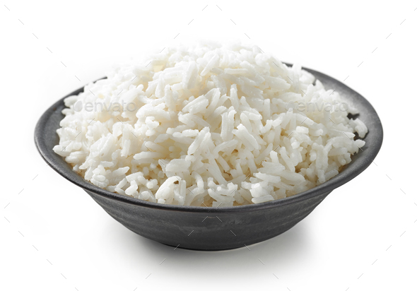

Boiled Rice

Description
Chicken stew is best when you eat it with Boiled rice. Quick to make, calorie dense and it tastes heavenly!
You can't go wrong with this! Ask any Nigerian to complete the sentence "chicken stew and...", and you can be sure they would complete it with "rice"
Ingredients
- Uncooked rice
- Water
- Salt to taste
- Butter (optional, very optional)
Steps
- Add 1/2 tbsp of salt to 2 1/2 cups of water
- Add butter if you want
- Boil
- When water is boiling, add the rice and set stove to low
- Let it simmer about 24 minutes